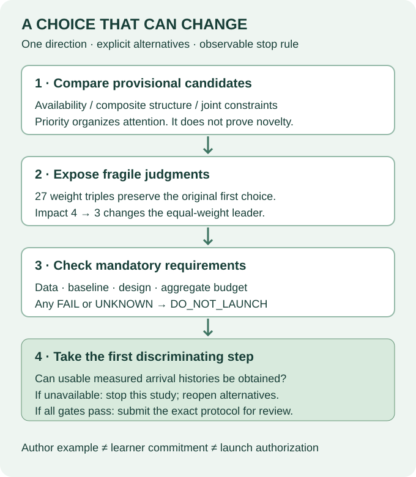

199 · Choose a direction you can defend¶
Year 5 · Research decision · 15-minute core + 30-minute lab
Your win: write one provisional research choice, explain what you are giving up, and name the first observation that would make you stop. The mission is to test relational learning's value with a credible experiment—not just select an appealing architecture.
1 · Carry forward your own proposal¶
Where we are. L190 assembled candidate gaps; L195 asked what would weaken the thesis; L197 connected evidence to claims. L198 now turns those gaps into three proposal cards. It appeared after this lesson's evidence freeze. Our approved audit keeps L190's cards as provisional author examples, not your completed proposals. Use your own L198 cards for the final selection memo. Earlier incomplete exits stay incomplete.
Keep the two shortlists distinct. L198 compares temporal-policy sensitivity across named models, prior × encoder interaction, and held-out-database transfer. The frozen L190 example uses measured-availability investigation, encoder × pretraining initialization, and joint serving/privacy constraints. Its ordinal scores do not rank L198's different experiments. Carry the decision method forward; rewrite the candidate set and justify fresh ratings for your own memo. L199's worked context-versus-target-row contrast is a proposed narrowing, not an already-approved execution of L198's protocol.
2 · A priority is not a launch decision¶
A priority says where to spend your next unit of investigation. A mandatory requirement says whether a particular experiment is executable. A kill criterion names the evidence that would make you abandon or redesign it. A high priority cannot compensate for data that do not exist.


Consider three candidates. Each still has unestablished novelty and future experiment cost. The statements below are proposals, not findings. Frozen candidate cards.
| Candidate | Falsifiable question | First unresolved requirement |
|---|---|---|
| Availability | Does relational-context benefit shrink under measured arrival visibility? | Real arrival histories linked to query cutoffs |
| Composite structure | Does composite message passing interact with relational pretraining? | Compatible, healthy four-arm implementation |
| Joint constraints | Does useful accuracy survive fixed freshness, latency and privacy constraints? | Measured workload and defensible privacy accounting |
Vocabulary: event time is when something happened; arrival time is when the predictor could actually access it. A late-arriving event can have an old event timestamp. The RelBench v2 paper motivates temporally constrained relational autocomplete; it does not by itself certify that a selected archive contains historical arrival times.
3 · Work one ranking by hand¶
The inherited course rubric is impact × weighted mean(data, implementation, compute feasibility). Each authored rating runs from 1 to 5; higher feasibility means easier. These are ordinal judgments. Multiplying and averaging them is a transparent decision aid, not a calibrated measurement of research value.
| Candidate | Impact | Data / implementation / compute | Equal-weight priority |
|---|---|---|---|
| Availability | 4 | 5 / 4 / 5 | 4 × (5 + 4 + 5) / 3 = 18.667 |
| Composite | 5 | 3 / 2 / 4 | 15.000 |
| Joint constraints | 4 | 3 / 3 / 2 | 10.667 |
The inherited availability data rating of 5 is debatable when arrival histories are missing. We preserve it so you can inspect the original judgment; the independent data requirement remains UNKNOWN. Rewriting a rating silently would conceal the disagreement.
Predict: lower availability's impact from 4 to 3, leaving everything else unchanged. Its priority becomes 14. Which direction leads now?
The audit checks every original weight triple from {1,2,3}, then all 21 feasible one-step changes to one rating at a time at equal weights. It does not cover every joint change or estimate a probability of success. Ties stay ties. Full executable report.
4 · Specify what would be learned¶
The author example prioritizes an availability feasibility check, not training. A later study could use one fixed learner family in four matched arms:
| Information policy | Target-row-only control | Related-row context added |
|---|---|---|
| Event time | Eligible target-row fields | Eligible target fields + related rows |
| Measured arrival time | Same fields, arrival-filtered | Same context definition, arrival-filtered |
A target-row-only control is explicit. A flat model using relational aggregates already sees related information. This contrast tests the added information under two policies; it does not isolate graph architecture.
For a higher-is-better metric, define D = (context − control)event − (context − control)arrival. Positive D means the apparent context advantage shrank under actual availability. Sign check with L198: its temporal example subtracts event from availability; here we subtract arrival from event so shrinkage is positive. Reversing the same two contrasts reverses the sign. The comparator also changes from PFN versus tree to context versus target-only input, so these lessons propose different quantities to measure. Keep task, labels, query identities, splits, learner family and tuning budget matched. Select models on validation, then evaluate untouched outcomes.
Illustration only: event scores 0.78 and 0.74 give benefit 0.04; arrival scores 0.75 and 0.73 give benefit 0.02. Thus D = 0.02 AUROC, or 2 percentage points. These four values are invented arithmetic, not experiment results.
Before the new evaluation, justify a useful-effect margin δ and a dependence-aware uncertainty method. An interval wholly above δ supports practically meaningful shrinkage; one overlapping δ is inconclusive; one wholly below δ weakens that prespecified useful-shrinkage claim. δ = 0.01 could illustrate this rule but is not an approved scientific threshold. Repeated entities, shared times and seeds do not constitute independent databases.
Repair an inherited shortcut. The old composite card calls an interaction interval including zero a falsifier. Zero overlap alone is inconclusive. To argue against a useful positive interaction, define its margin and obtain sufficient precision. We retain the old source bytes and state the correction here.
5 · Ask for the missing evidence¶
For this exact future experiment, none of these requirements has yet been admitted:
- Data: measured arrival histories, documented semantics, sufficient coverage and stable complete query keys.
- Baseline: healthy reproducible implementations with matched information and validation-only selection.
- Design: exact task, falsifiable contrast, justified margin and uncertainty unit, fixed before new test inspection.
- Budget: the complete aggregate forecast, including preparation, all seeds, retries, validation and overhead, with a reserve and cutoff.
Same priority, different next action. Hold the availability priority at 18.667 and suppose baseline, design and budget have passed. Change only the data requirement:
| Data | Admission | Next action |
|---|---|---|
| UNKNOWN | Do not launch | Inspect a bounded arrival-history sample |
| FAIL | Do not launch | Retire or redesign this exact study |
| PASS | Ready for review | Review the complete protocol |
The score did not change, yet the justified next step did. UNKNOWN means the required evidence is absent; FAIL means the requirement was checked and not met. Both block this study, but they call for different responses. These are hypothetical states; the actual four requirements remain UNKNOWN.
Transfer the trace. In the last row, make budget UNKNOWN again. Readiness disappears. A high data score or a passed baseline cannot compensate for a missing whole-experiment forecast. The function never grants execution authorization.
First discriminating step: establish whether a usable arrival-history sample can be obtained and linked correctly. If it cannot, stop this historical-availability study and reopen the alternatives. Synthetic delays could answer a different mechanism question; they cannot manufacture the missing history.
Opportunity cost: spending your next week chasing unavailable arrival histories may delay a feasible composite experiment. Record a bounded feasibility effort and its stopping rule before spending it. The L199 audit's $0 cloud/API and 1,800-second cap cover this teaching package's execution; the future research cost is still unknown.
6 · What did we fully reproduce?¶
| Evidence | Complete scope | Result boundary |
|---|---|---|
| Saved predictions | 3 methods × 10 draws × 702 queries | Exact L190 report parity; no new inference |
| Literature | 4 frozen searches; 31 records / 30 unique papers | Only 2 searches complete; novelty not established |
| Ranking | All 27 weight triples; 21 one-rating perturbations | Authored decision aid, not measured research merit |
| Later receipts | Full L194/L197 reports authenticated | 21 L194 task slots have no fresh scores; numerics not replayed |
The L190 replay covers the released RDB-PFN v5 Table 9 comparison: three methods × ten support draws × all 702 queries, with 512 support rows. The mean RDB-PFN minus TabICL difference is 0.004369 AUROC, positive in 6/10 draws. That comparison contains no arrival-policy intervention. It supports a scoped saved-prediction statement, not the proposed hypothesis.
Original support sets, label identity, temporal separation and complete (entity_id, cutoff) keys are checked. Released labels and DFS features remain trusted source inputs. Independent pairwise AUROC, raw XML and rational ranking checks guard against merely copying a report. L194 and L197 are authenticated status receipts here; their experiments are not rerun. Exact protocol and commands.
7 · Make the choice yours¶
Write 400–700 words: one direction, one testable contrast, the strongest reason to prefer another direction, and a concrete reopening condition. An honest choice may be “investigate X first; launch blocked.” Choosing no currently executable study is better than pretending a requirement passed.
Blank memo · Student notebook · Executed solution · Portable reproducer · Quick reference.
Lab: implement three functions—priority with ties, mandatory admission with UNKNOWN, and memo presence checks. Then run the complete replay using your functions. Deliberately remove one saved run and explain the rejection. Recompute the impact-rating reversal. Finally write your memo before opening the author example.
Read the worked author memo after your own draft
Investigate availability first; do not launch yet¶
Worked author example · provisional · learner commitment NOT_MADE
This example uses the frozen L190 shortlist; it does not rank L198’s different protocols. I choose availability-aware autocomplete as the first direction to investigate. The question is whether the apparent predictive benefit of related rows decreases when both competing pipelines obey measured arrival-time visibility. This choice serves the course mission: any argument that relational learning unlocks missed value first needs a fair account of what was knowable at prediction time. It does not claim that this question is novel.
The proposed estimand is a difference of benefits: D = (relational-context score − target-row-only score) under event-time visibility, minus the same difference under arrival-time visibility. For a higher-is-better classification metric, positive D means the apparent relational-context advantage shrank. All four arms would share one task, complete query identities, labels, temporal splits, learner family and a matched validation-search budget. A target-row-only baseline is explicit: a flattened model with relational aggregates would not be a no-relational-information control. The relational arm here tests the value of additional related-row information; it does not isolate a graph architecture.
No exact task, meaningful effect margin, seed count, or uncertainty method is admitted for execution yet. Before inspecting new test outcomes I would identify an appropriate classification task, justify an AUROC margin δ in its decision context, fix validation choices, and choose uncertainty units that respect repeated entities and shared time effects. Support draws or training seeds on one test population are not independent databases. Evidence for a practically important shrinkage would require an interval for D above δ; an interval overlapping δ is inconclusive. A precise interval below δ would weaken this particular useful-shrinkage claim, not prove that information timing never matters.
The complete L190 replay supplies provenance discipline, not direct evidence for this hypothesis. It re-scores 21,060 released saved predictions from three methods and ten paired support draws on F1/driver-dnf. RDB-PFN minus TabICL averages about 0.004369 AUROC, with six positive paired differences. That comparison contains no arrival-policy intervention. The frozen literature search completed only two of four queries. Neither replay nor an incomplete search establishes novelty. Later L194/L197 receipts preserve the source-preprocessing blocker for fresh model reproduction; their numerical experiments are not replayed here.
The shortlist assigns availability priority 18.667, composite structure 15, and joint serving/privacy constraints 10.667. All 27 weight combinations preserve the first choice, but reducing availability's impact rating from 4 to 3 reverses it at equal weights. These ordinal judgments organize attention; they do not estimate scientific success. Composite structure remains attractive but requires a compatible matched four-arm pretraining experiment. Joint constraints would require actual latency, freshness and privacy measurements. Deferring either may forgo a more impactful contribution; the present preference is for an identifiable first uncertainty to resolve.
My first action would be a bounded data-access feasibility check: obtain a documented sample of true arrival histories, verify its semantics and query linkage, and assess coverage without tuning on test outcomes. If the histories cannot be obtained, I would stop the historical-availability proposal and reopen the alternatives. Synthetic delays could support a separately named mechanism study, not replace the missing historical experiment. Healthy exact baseline configurations, a locked design, novelty review and an aggregate cost forecast remain required before launch. The L199 audit itself has a USD0 cloud/API budget and a 1,800-second local cap; that does not establish the future study's cost. Current launch state: DO_NOT_LAUNCH.
Primary reading: COS preregistration guidance. A prospective plan helps distinguish planned confirmation from exploration. Our old replay is already observed evidence; a local memo does not retrospectively make it confirmatory, and no public registration has been submitted.
Exit check: Can another person identify your exact comparison, its unresolved gates, what would weaken your hypothesis, and why the deferred alternative could be better? Send your memo or any unclear step to the agent for follow-up. Filling boxes does not establish mastery: PENDING_WRITTEN_DEFENSE.
Revisit: tomorrow reconstruct D from memory; in seven days argue for the strongest alternative; in thirty days revisit the choice only with new evidence or an explicitly changed judgment. Lesson 200 supplies a separate, fresh RDB-PFN checkpoint reproduction and asks you to defend it alongside your proposal. That selected result does not complete the blocked RDBLearn search; your proposal and defense still require review.